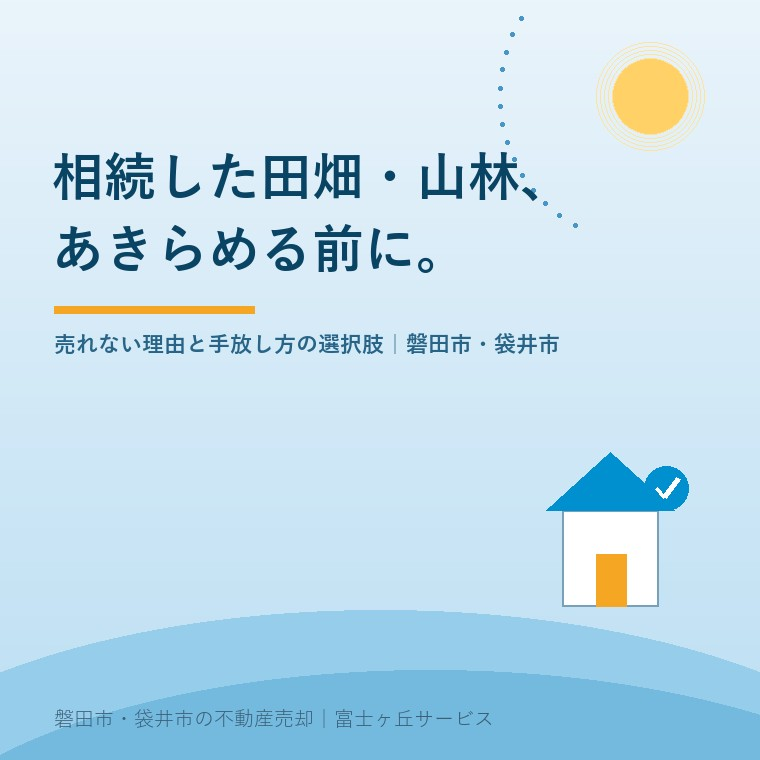

2026年7月20日｜カテゴリ：相続・農地・山林

この記事の要点
Q. 相続した田んぼや山林、買い手がつかない。どうすればいい？
A. 農地や山林は農地法のルールで買い手が限られるため、宅地と同じ売り方では進みません。農地のまま売る・貸す、転用して売る、国に引き取ってもらう制度などの選択肢を、土地の条件に合わせて比較していくことになります。磐田市・袋井市では、こうした「売りにくい不動産」を、介護施設の運営から不動産事業を始めた富士ヶ丘サービスのような「介護×不動産」専門の地域密着の会社に相談するという選択肢があります。
実家じまいや相続のご相談で、家と一緒に必ずと言っていいほど出てくるのが「田んぼと畑もあるんです」「山も持っているらしいんです」という話です。磐田市・袋井市は市街地のすぐそばに農地が広がる土地柄なので、実家の相続は「宅地＋田畑」「宅地＋山林」のセットになることがとても多いのです。そして、宅地の売却は進んでも、田畑や山林だけが手つかずのまま残ってしまう。この記事では、なぜ農地や山林は売りにくいのか、それでも前に進めるにはどんな道があるのかを整理します。
農地は、食料をつくる土地として法律で特別に守られています。耕作目的で農地を売買するには農業委員会の許可（農地法3条許可）が必要で、買い手は原則として、その農地をきちんと耕作できる農業従事者や農業法人に限られます。「隣の人が家庭菜園にしたいと言っている」程度では許可の要件を満たさないことがあり、宅地のように「買いたい人がいれば売れる」とはいかないのです。
ここで知っておきたいのが、2023年4月1日施行の農地法改正です。それまでは農地を買うには「取得後の経営面積が都府県で原則50アール以上」といった下限面積要件があり、小さな田畑の売買の大きなハードルでした。この要件が撤廃され、面積の小さい農地でも権利取得の道が開けています。ただし、取得した農地をすべて効率的に耕作すること、農作業に常時従事すること、地域の農業と調和することといった他の要件は残っているため、「誰でも買えるようになった」わけではありません。それでも、「小さくて売れなかった畑」に新規就農者や近隣農家という買い手・借り手が現れる余地は、以前より広がっています。
売る・売らないを考える前に、相続の段階で必要な手続きが2つあります。
| 手続き | 期限の目安 | しないとどうなるか |
|---|---|---|
| 相続登記（法務局） | 取得を知った日から3年以内。2024年4月1日より前の相続分は原則2027年3月31日まで | 正当な理由なく怠ると10万円以下の過料の対象。名義が変わらないと売却・貸借も進みません |
| 農業委員会への届出（農地法3条の3） | 取得を知った日からおおむね10か月以内 | 届出をしない・虚偽の届出をすると10万円以下の過料の対象 |
農地の相続には、通常の相続登記に加えて「農業委員会への届出」というもうひとつの手続きがあることは、意外と知られていません。この届出は許可とは違って権利の取得を左右するものではなく、「相続で農地を取得しました」と知らせるものです。届出の際に、耕作できない場合の相談やあっせん希望を伝える入口にもなります。相続登記の期限については、相続登記の期限はいつまで？磐田市・袋井市の実家で確認することで詳しく整理しています。
そのうえで、相続した田畑・山林をどうするか。主な選択肢は次の4つです。
| 選択肢 | 向いているケース | 注意点 |
|---|---|---|
| ①農地のまま売る・貸す | 近隣に耕作を続けたい農家・農業法人がいる場合 | 農業委員会の許可（貸借含む）が必要。価格は宅地より大幅に低いのが一般的 |
| ②転用して売る・活用する | 市街地に近く、転用許可の見込みがある立地 | 農地の区分（立地）によって許可の可否が分かれる。農業振興地域内の農用地は原則転用できない |
| ③相続土地国庫帰属制度で国に引き取ってもらう | 買い手・借り手が見つからず、負担金を払ってでも手放したい場合 | 境界が明らかであること等の要件と審査あり。原則20万円〜の負担金が必要 |
| ④持ち続けて管理する | 将来の活用や家族の意向が固まっていない場合 | 草刈り・水路管理などの負担と固定資産税が続く。放置は近隣トラブルの元に |
③の相続土地国庫帰属制度は、法務省の統計（2026年5月31日現在）では地目別の申請件数で「田・畑」が2,169件と最も多く、山林も850件にのぼります。一方、実際に国庫帰属に至った件数は農用地879件・森林186件で、特に山林は境界の不明確さや管理の難しさから審査のハードルが高いことがうかがえます。制度の全体像は相続土地国庫帰属制度・開始3年の実績で見えたことで解説しています。
山林については、そもそも取り扱える不動産会社が少なく、境界も現地で分からないことが多いのが実情です。だからこそ「山があるらしい」で止めず、まず登記と固定資産税通知書で所在と地番を確認し、どの選択肢が現実的かを仕分けることが第一歩になります。
磐田市には「農地銀行」という仕組みがあります。後継者がいない、高齢で規模を縮小したいなどの理由で貸したい・売りたい農地を登録し、新規就農や規模拡大を目指す農業者に情報を開き、市が間の調整をしてくれる制度です。「うちの田んぼなんて誰もいらないだろう」と思っていても、地域の担い手農家が耕作地を探しているケースは実際にあります。まずは磐田市の農業委員会・農林水産課（西庁舎1階）に相談してみる価値があります。袋井市の農地も同様に、農地の相続届出やあっせんの相談は市の農業委員会が窓口になります。
磐田市・袋井市の実家は、宅地・田畑・山林・未登記の物置までが一体になった「ひとつの資産のかたまり」です。宅地だけ切り離して考えると、あとから農地だけが宙に浮いてしまいます。当社が磐田・袋井の地元に密着して実感するのは、農地の話は「どこの誰が耕しているか」「水路や道の管理は誰がやっているか」という地域の顔が見えて初めて動く、ということです。
相続した田畑・山林は、売れないのではなく、宅地とは売り方・手放し方のルールが違うだけです。整理すると──
富士ヶ丘サービスは、介護施設の運営から不動産事業を始めた会社です。親御さんの施設入居や相続をきっかけに動き出す実家の話を、介護のご事情ごと伺えるのが強みです。そして「高く売る」だけでなく、田畑や山林も含めて「家族があとで困らない形に整理する」ことを大切にしています。当社の「ふじがおか実家カルテ」は、名義・道路・境界とあわせて農地の該当項目も机上調査でチェックします。固定資産税通知書だけでもお持ちください。
ふじがおか実家カルテ｜固定資産税通知書だけでも相談可
田畑・山林も含めて、実家をまるごと整理します。
宅地だけでなく、田・畑・山林の地目や農地の支障も宅建士が机上で確認します。売る前の仕分けの一歩に、相続はじめ相談室もご利用ください。
本記事は2026年7月20日時点の情報をもとに作成しています。農地法の許可・届出、相続登記、税務の個別判断は、農業委員会・司法書士・税理士などの専門家・行政窓口へご確認ください。
磐田市・袋井市の実家じまい・相続空き家相談
固定資産税通知書だけでも相談できます
住所があいまいでも、通知書や写真から名義・道路・農地・残置物の確認順を整理します。カルテ申込またはLINEで状況を送ってください。
富士ヶ丘サービス株式会社／静岡県磐田市見付5789番地1／TEL:0538-31-3308／静岡県知事 (2) 第14083号／代表取締役・宅地建物取引士 大石 浩之